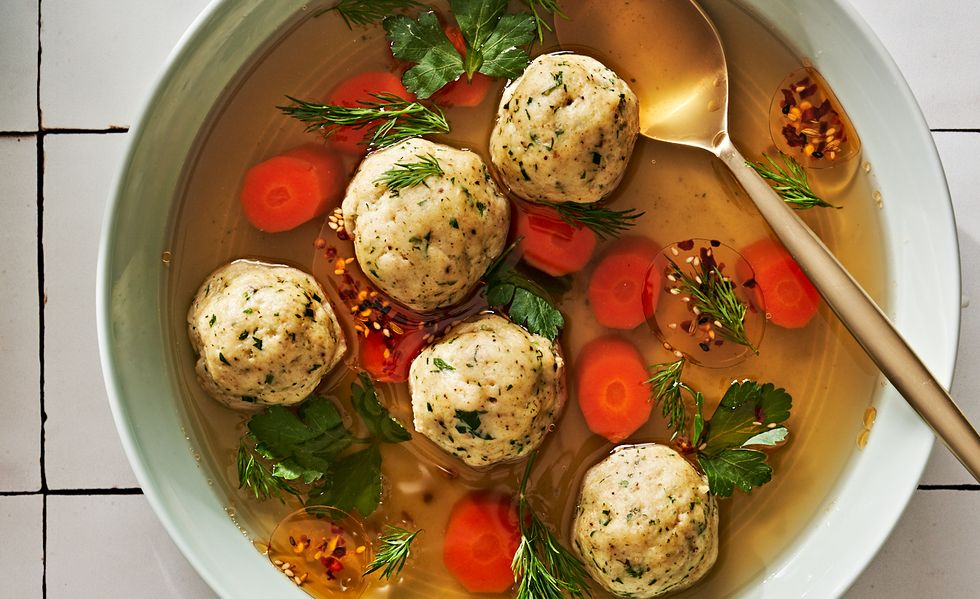

Matzo Sall Soup

A vegetarian soup to comfort your soul
Ingredients
- Matzo Balls
- Chili Oil
- Vegetable Broth
How to make Matzo Ball Soup
- Make vegetable broth. (you can use powder by maggi)
- Strain the broth.
- Put Matzo balls into boiling water.
- Take them out and serve the broth with matzo balls and carrots.
- Bon Appetit!